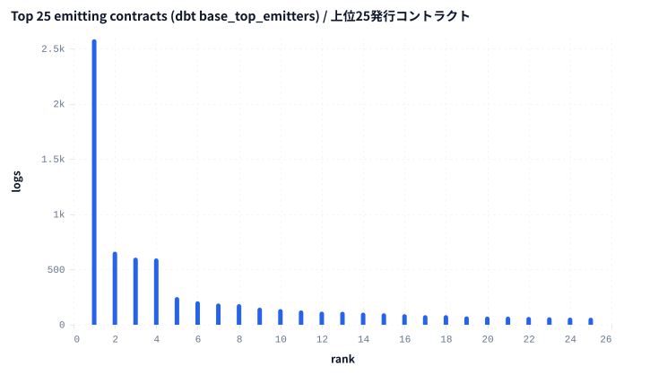
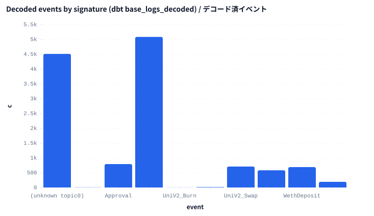
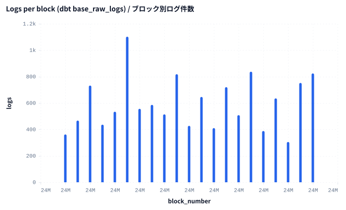
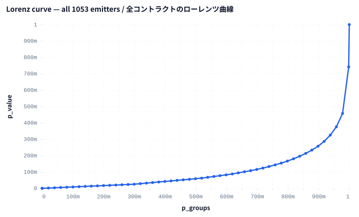

エグゼクティブサマリー
Executive summary
- Base の実ログ 12,559 件を 21 ブロック（24000000–24000020）で取得。1,053 コントラクト・472 シグネチャ。
- 本レポートの全数値は raw Parquet ではなく dbt spellbook ビューから読み出し。キュレーション→クエリの全パイプラインが実データで稼働。
- ログの 64.1% が topic0 デコード辞書に一致。生ログのみから ERC-20 transfer 5,079 件（337 トークン）を導出。
- 発行集中度は高い: top-1（WETH (L2 predeploy)）= ログの 20.6%。全 1053 コントラクトで Gini 0.795、HHI 0.0527。
- 期間: 2024-12-21 13:55:47 ～ 2024-12-21 13:56:27（Base、約2秒ブロック）。公開RPCからキー不要で取得。
- 12,559 real Base logs across 21 blocks (24000000–24000020), from 1,053 distinct contracts and 472 event signatures.
- Every figure here is read from a dbt spellbook view, not from raw Parquet — the full curate-then-query pipeline ran against live data.
- 64.1% of logs matched the topic0 decode dictionary; 5,079 ERC-20 transfers across 337 tokens were derived from raw logs alone.
- Emitter concentration is high: top-1 (WETH (L2 predeploy)) = 20.6% of logs; Gini 0.795, HHI 0.0527 over all 1053 contracts.
- Window: 2024-12-21 13:55:47 → 2024-12-21 13:56:27 (Base, ~2-second blocks). Pulled keyless over public RPC.
1. データ来歴 & メソドロジー
1. Provenance & methodology
pull（キー不要）: chainq pull --chain base --from 24000000 --to 24000020 --source rpc。Subsquid v2 アーカイブが API キー必須になったため、公開 RPC からブロック単位で取得（eth_getLogs + eth_getBlockByNumber）し、正規の11カラムスキーマで data/base.logs.parquet を書き出し。
変換: pnpm dbt:run --select live が Parquet 上に5つの spellbook ビューを構築（base_raw_logs / base_logs_decoded / base_erc20_transfers_derived / base_log_activity_hourly / base_top_emitters）。dbt スキーマテストは全 PASS。
レポート: 本ファイルは raw ではなくこれらのビューをクエリして描画。集中度（HHI / Gini / ローレンツ）は全 1053 コントラクトで算出。
Pull (keyless): chainq pull --chain base --from 24000000 --to 24000020 --source rpc. Subsquid's v2 archive now requires an API key, so the snapshot pulled logs block-by-block over a public RPC (eth_getLogs + eth_getBlockByNumber), writing data/base.logs.parquet with the canonical 11-column schema.
Transform: pnpm dbt:run --select live built five spellbook views over that Parquet — base_raw_logs, base_logs_decoded, base_erc20_transfers_derived, base_log_activity_hourly, base_top_emitters — all PASS with their dbt schema tests.
Report: this file queries those views (not the raw file) and renders. Concentration (HHI / Gini / Lorenz) is computed over all 1053 emitters.
2. 上位25発行コントラクト
2. Top 25 emitting contracts

2a. ラベル付き上位15
2a. Top 15 (labelled)
| rank | contract | logs | txs | sigs | share |
|---|---|---|---|---|---|
| 1 | WETH (L2 predeploy) | 2586 | 1287 | 4 | 20.59% |
| 2 | USDC (Circle native) | 662 | 364 | 3 | 5.27% |
| 3 | 0x827922686190790b37229fd06084350e74485b72 | 608 | 77 | 6 | 4.84% |
| 4 | 0xb84099396f8de44d2c996ed708126a2f059406f4 | 601 | 1 | 1 | 4.79% |
| 5 | ERC-4337 EntryPoint v0.6 | 251 | 30 | 4 | 2.00% |
| 6 | 0xca73ed1815e5915489570014e024b7ebe65de679 | 213 | 149 | 2 | 1.70% |
| 7 | 0x2faeb0760d4230ef2ac21496bb4f0b47d634fd4c | 193 | 15 | 2 | 1.54% |
| 8 | 0x974474c8bcb36302be93858466728271fb36544e | 187 | 10 | 1 | 1.49% |
| 9 | 0xcbb7c0000ab88b473b1f5afd9ef808440eed33bf | 155 | 85 | 2 | 1.23% |
| 10 | 0xc1a6d4ccb0e913c7f785fcc60811b34bc8cc801c | 142 | 71 | 2 | 1.13% |
| 11 | 0xdc88389898a30f67a2165791f1bdcf2d2ae94dcf | 130 | 65 | 2 | 1.04% |
| 12 | 0x940181a94a35a4569e4529a3cdfb74e38fd98631 | 119 | 58 | 2 | 0.95% |
| 13 | 0x6b2c0c7be2048daa9b5527982c29f48062b34d58 | 118 | 45 | 3 | 0.94% |
| 14 | 0x25646338f3d92d9c28a7ab9eb543efccfd67621b | 110 | 54 | 2 | 0.88% |
| 15 | 0xf312735acd921abbfac2e8b84c5d329c766d0c97 | 104 | 52 | 2 | 0.83% |
3. デコード済イベント
3. Decoded events

4. ブロック単位の活動
4. Per-block activity

5. 発行集中度（全コントラクト）
5. Emitter concentration (all contracts)
| metric | value |
|---|---|
| top-1 share | 20.59% |
| top-5 share | 37.49% |
| top-10 share | 44.57% |
| HHI | 0.0527 |
| Gini | 0.795 |

6. 異常値
6. Anomalies
ピークブロック 24000005 は ウィンドウ中央値ブロック（556 logs）に対し 1,102 logs — 2.0倍高い。 DEX・決済活動が単一ブロックに集中。
単一tx発行者 0xb84099396f… は ウィンドウ全体の logs/tx（6 logs/tx）に対し 601 logs/tx — 100.2倍高い。 1 件の tx で 601 ログを発行 — バッチ配布で、デコードするまで発行ランキングを歪めます。
Peak block 24000005 stands out at 1,102 logs against the median block in window (556 logs) — 2.0× higher. Concentrated DEX / settlement activity landed in one block.
Single-tx emitter 0xb84099396f… stands out at 601 logs/tx against the window-wide logs/tx (6 logs/tx) — 100.2× higher. It emitted 601 logs in 1 transaction(s) — a batch distribution that reshapes the emitter ranking until it is decoded.
7. 比較
7. Comparisons
- WETH（2,586 logs）は USDC（662 logs）の 3.9倍。
- ピークブロック（1,102 logs）は 中央値ブロック（556 logs）の 2.0倍。
- デコード済ログ（8,052 logs）は 未デコードログ（4,507 logs）の 1.8倍。
- WETH (2,586 logs) is 3.9× higher than USDC (662 logs).
- peak block (1,102 logs) is 2.0× higher than median block (556 logs).
- decoded logs (8,052 logs) is 1.8× higher than undecoded logs (4,507 logs).
8. アクションアイテム
8. Action items
- オンチェーン・デューデリ分析者 へ: 0xb84099396f… の 601 ログ tx をデコードしてから出来高集計を信用する。1 tx が発行ランキングを歪めている（今すぐ）
- トークノミクス・コンサルタント へ: Gini 0.795 を本ウィンドウの発行集中度ベースラインとし、top-1 シェアが 20.6% を超えるクライアントダッシュボードを警告する（今四半期）
- ウォレット / アカウント抽象化インテグレーター へ: ERC-4337 EntryPoint がここで 251 ログ — アクティブユーザー算定では UserOperation を EOA tx と分けて数える（注視）
- If you are a onchain due-diligence analyst: decode 0xb84099396f…'s 601-log transaction before trusting any volume rollup — one tx is reshaping the emitter ranking (now)
- If you are a tokenomics consultant: treat Gini 0.795 as this window's baseline emitter concentration; flag client dashboards whose top-1 share exceeds 20.6% (this quarter)
- If you are a wallet / account-abstraction integrator: ERC-4337 EntryPoint shows 251 logs here — count UserOperations separately from EOA transactions when sizing active users (watch)
注意
Caveats
ウィンドウは小さい（21 ブロック ≈ 42秒）。パイプライン実証が目的で、相場解釈ではありません。--from/--to で拡張可能。
topic0 デコードは約14シグネチャの手製辞書を使用。未デコードの 35.9% は 4byte 系の完全レジストリで縮小します。トークンの value は生hex（decimals 未適用）のため、本レポートは transfer の*件数*であって USD 出来高ではありません。
Window is small (21 blocks ≈ 42s) — a deliberate proof-of-pipeline, not a substantive market read. Widen by changing --from/--to.
topic0 decoding uses a ~14-signature hand-curated dictionary; the 35.9% undecoded share would shrink against a full 4byte-style registry. Token value is carried as raw hex (no decimals applied), so this report counts transfer *events*, not USD volume.